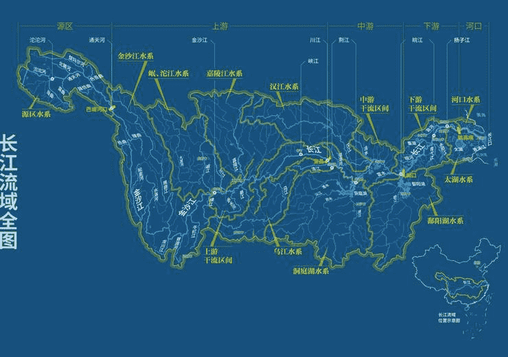

长江是亚洲第一长河，世界第三长河，全长约 6300 千米，流域面积达 180 万平方千米，涵盖了我国多个重要的地理区域和生态系统。
长江发源于青藏高原的唐古拉山脉各拉丹冬峰西南侧，源头为沱沱河。它自西向东流经青海、西藏、四川、云南、重庆、湖北、湖南、江西、安徽、江苏、上海 11 个省、自治区、直辖市，最终在上海崇明岛以东注入东海。
长江的地形地貌丰富多样。上游地区多为高山峡谷，地势落差大，如虎跳峡，江水在狭窄的峡谷中奔腾咆哮，水流湍急，水能资源极为丰富，是我国重要的水电开发基地。中游地区地势较为平坦，河道弯曲，湖泊众多，如著名的洞庭湖、鄱阳湖等，这些湖泊对调节长江水量起着重要作用。下游地区则是平原广阔，河网密布，形成了肥沃的长江三角洲平原，是我国重要的农业产区和经济发达地区。
长江水系庞大，支流众多。主要支流有雅砻江、岷江、嘉陵江、乌江、汉江、湘江、沅江、赣江等。这些支流与长江干流相互交织，形成了复杂的水系网络，为沿岸地区提供了丰富的水资源，滋养了无数的生命，也孕育了灿烂的长江文明。
长江的水文特征明显。它水量丰富，年径流量较大，为我国的经济社会发展提供了充足的水源。同时，长江的水位变化受季节影响较大，夏季是丰水期，冬季相对为枯水期。由于流经区域广泛，不同河段的含沙量也有所不同，上游地区植被较好，含沙量相对较小，而中下游地区因人类活动等因素，含沙量有一定增加。
长江在我国经济发展中具有举足轻重的地位。它是重要的内河航道，有 “黄金水道” 之称，承担着大量的货物运输任务，促进了区域间的贸易往来和经济交流。沿岸的城市如重庆、武汉、南京、上海等，依托长江的水运优势和丰富的水资源，发展成为重要的工业、商业和交通中心。此外，长江流域还拥有丰富的渔业资源和旅游资源，为当地经济发展提供了重要的支撑。
长江不仅是一条自然之河，更是中华民族的母亲河，承载着悠久的历史和灿烂的文化，对我国的生态环境、经济发展和社会进步都有着不可替代的重要作用。